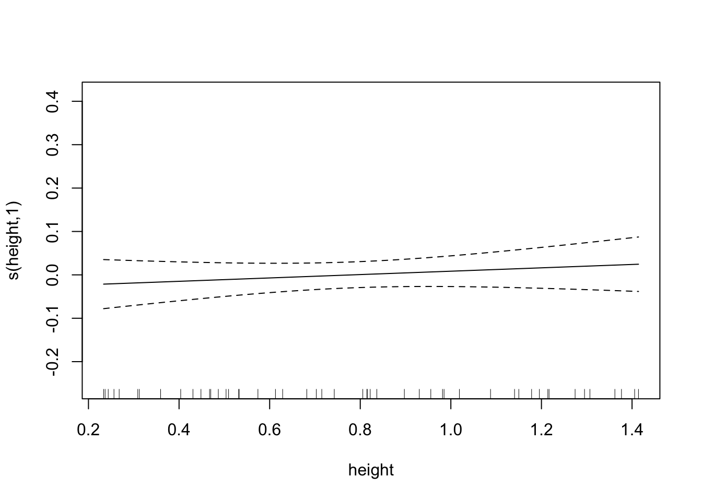
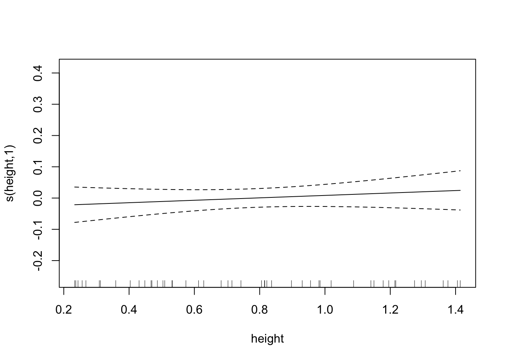

Machine Learning Discussion
Collin Edwards
April 11, 2018
Overview
What is machine learning?
A practical definition of machine learning (shamelessly stolen from my advisor, Stephen Ellner) is: a statistical model for which you cannot write out an equation to completely describe how to fit the model. Instead, at least some part of model fitting involves a set of rules that the computer follows.
There are a ton of techniques that fall into this category. In fact, fitting a linear regression with Ordinary Least Squares (OLS) follows this definition, but we usually don’t mean linear regression when we say “Machine Learning”. Instead, we mean things like
- regression trees
- Random Forests
- Splines
- Cluster Analysis
- multidimensional scaling
- Support vector machines
- neural nets
- S-maps and simplex projection
Today I’m going to talk through when we might use machine learning techniques, then explain how to use two fairly simple and common ones.
When should we use machine learning?
We can think about statistical models as falling into the general structure of \[\hat{Y} = \hat{\beta}X\] where \(\hat{Y}\) is a vector or matrix of our estimated values of our response variable, \(\hat{\beta}\) is a matrix of our estimated coefficients, and \(X\) is a matrix of our measured predictors. This is just a fancy and compact way of saying that for each data point i, \[\hat{y_i} = \hat{b_0} + \hat{b_1}x_1 + \hat{b_2}x_2 + ...\]
The models we’ve talked about so far in this class are generally quite good at giving us values of \(\hat{\beta}\) - at telling us how our predictors matter. For basic science, this is really handy. I want to know how the presence of trichomes or toxins in a plant influence the growth of herbivores, and traditional statistical techniques are good at doing that.
However, regression approaches involve a lot of assumptions: Linearity, independence of predictors, the distribution of error, etc. Meeting these assumptions can really limit our ability to examine complex processes. While careful work, experiment design, model design and testing can help us overcome this limitation, they can’t completely remove them.
Machine learning techniques are generally very robust to these problems, and as such they are among the best tools for calculating \(\hat{Y}\). Unfortunately, they are generally black boxes - while they are often the best tool for predicting response variables, it’s generally impossible to understand which of the predictors mattered, and in what way (\(\hat{\beta}\)).
So if you want to predict a pattern, machine learning tools are often really handy. If you want to understand what drives a pattern, machine learning tools are generally not great. For example, Ruth Bennett in natural resources has been doing work on golden-winged warbler wintering grounds in Central America. She’s observed birds in a number of different heights, and measured all kinds of information about those sites. If, for conservation purposes, she wants to produce a predictive map of where in central America the golden-winged warblers should be overwintering, she might benefit from using a machine learning model. On the other hand, if she wants to describe which habitat features explain the presence of golden-wing warblers, she probably wants to avoid machine learning models.
As an aside, this is a similar trade-off to the use of AIC versus the use of p values when doing model selection in a regression framework. AIC is an approximation of cross-validation, which is determining how well a model predicts data points that weren’t used to construct it (ie how well does the model estimate \(\hat{Y}\)). The p value associated with a coefficient, on the other hand, describes how sure we are about that part of \(\hat{\beta}\).
One other advantage of machine learning techniques is that some of them can allow you to work with data for which you have far more predictors than data points. For example, in a recent paper we looked at how lagged climate effects impacted the growth and survivorship of perennial plants (@teller_linking_2016). We had daily measures of temperature and precipitation for multiple years before each census, and we suspected there might be interaction effects, so we had thousands of predictors to test (How did rainfall one day before census influence growth? How did rainfall two days before census influence growth? How did rainfall three days…). While it’s often my go-to tool, a mixed model would have been vastly overfitted, since we had more predictors than data points. However, using smoothing splines and random forests we were able to tackle this challenge and predict growth as a function of daily climate measures.
Machine Learning Tools
Today I’m going to talk about two different machine learning tools that span of the gamut of scrutibility: smoothing splines, which are almost as interpretable as linear regressions, and random forests, which are quite inscrutable (although Giles Hooker here at Cornell has been working on some clever and incredibly difficult approaches to understanding how predictors influence the outcome of random forests).
Experimental Data
I’m not really an empiricist. I don’t have much data of my own. But! We’re going to be trying out these new methods for picking up complicated relationships. So we don’t want to use empirical data anyways - we want to simulate data, so we know what the right answer is and can see how well our methods match it. We’ll do this by writing experiment functions.
Experiment 1 - Simple nonlinear
Let’s start with a simple case. Hypothetical Collin goes out and does a bio-assay on hypothetical milkweed plants, looking at how well hypothetical aphids grow depending on the density of hypothetical trichomes. Hypothetically.
To make things interesting, we’ll use a Gaussian response curve. This isn’t something that a standard regression can capture well.
We’ll write our function so that we tell it how many data points we want (we’ll call that n), and it will spit out
- experimental data points which include noise
- actual values for those data points
- the points needed to draw a pretty curve
We’ll also add in an optional variable which we’ll call sd, which determines how much random noise is used when generating the data points. For the sake of simplicity, let’s assume that trichome densities vary from 0 to 5, and biomass is always going to be 1 plus some amount)
exper_1 = function(n, sd=.1){
base.biomass=1 #level of biomass that we're varying from
# We're not using zero because that means we could get negative biomasses.
# Which would be totally fine, but might feel wrong
##generate experimental data
trich=runif(n,min=0,max=5) #The trichomes of the plants we measured
biomass.true=2*dnorm(trich)+base.biomass #if there were no noise, biomass of aphids
biomass.noise=biomass.true+rnorm(n, mean=0, sd=sd) #actual biomass of aphids
data=as.data.frame(cbind(biomass.noise,biomass.true,trich)) #Save our data.
## save vectors for plotting curve
curve.x=seq(0,5,by=.01)
curve.y=2*dnorm(curve.x)+base.biomass
curve.df=cbind(x=curve.x,y=curve.y)
return(list(data=data,curve.df=curve.df))
}Shall we try running an experiment? Let’s go sample 60 plants
exper.1=exper_1(n=60,sd=.1)
plot(x=exper.1$data$trich, y=exper.1$data$biomass.noise,
xlab="trichome density",
ylab="aphid biomass",
main="Simulated data (n=60)")
points(exper.1$curve.df,type='l',ylim=c(.5,2))
All right, so we can see the generating function (the black line), and our simulated data (all the points). Note that unlike the real world, we actually get to see that black line, and know that that is exactly what the real underlying pattern is. Which means when we get a fitted model, we can see how well it actually predicts the underlying process.
Experiment 2 - nonlinear with other predictors
Okay, while we’re building experiments, let’s make a more complicated one. Or rather, the same experiment, but let’s measure some more things. Let’s say that in experiment two we also measure plant toxin level, plant height, and oh, maybe plant IQ (don’t ask how we measure that one). And let’s say that alphid biomass has the same Gaussian relationship with trichomes as before, but also we subtract an amount that’s linear dependent on toxins, and the two other predictors are red herrings - there’s no actual pattern there. We’ll change the base biomass to hopefully ensure we get no negative biomasses (but it’s totally fine if we do!). We’ll also choose a coefficient for toxins such that it and trichomes have the same general effect size.
exper_2 = function(n, sd=.1){
base.biomass=2 #level of biomass that we're varying from
# We're not using zero because that means we could get negative biomasses.
# Which would be totally fine, but might feel wrong
##generate experimental data
trich=runif(n,min=0,max=5) #The trichomes of the plants we measured
toxin=runif(n=n)
height=runif(n=n, min=.2, max=1.5)
IQ=rnorm(n=n, mean=100, sd=10)
biomass.true=dnorm(trich)+base.biomass-.4*toxin #if there were no noise, biomass of aphids
biomass.noise=biomass.true+rnorm(n, mean=0, sd=sd) #actual biomass of aphids
data=as.data.frame(cbind(biomass.noise,biomass.true,trich, toxin, height, IQ)) #Save our data.
## save vectors for plotting curves
trich.x=seq(0,5,by=.01)
trich.y=dnorm(trich.x)+base.biomass
trich.df=cbind(x=trich.x,y=trich.y)
toxin.x=seq(0,1,by=.01)
toxin.y=-toxin.x
toxin.df=cbind(x=toxin.x,y=toxin.y)
return(list(data=data,trich.df=trich.df,toxin.df=toxin.df))
}Okay, the experimental design is done. Our experiment_2 function will spit out data, the data frame trich.df which shows the real relationship between trichome and biomass, and toxin.df, which shows the real relationship between toxin and biomass.
Let’s run our experiment again, and look at the pairwise relationship between predictors and responses. Remember, biomass.noise is the measured aphid weights. biomass.true is what values would be in the hypothetical perfect lab conditions, where we were capturing everything that influenced aphid biomass and all aphids were identical. So the relationship between those two is how much noise is in the system. And hopefully we see some patterns in the plots of trichome vs biomass, and the plots of toxin vs biomass. I’ll use the panel.smooth option to add a loess smoother line to those relationships; the red lines don’t say anything about significance, just about local patterns in the points.
exper.2=exper_2(50)
pairs(exper.2$data,panel = panel.smooth)
Now that we have our data, let’s talk about a few ways of using machine learning techniques to fit the data and perhaps explain the underlying patterns.
Smoothing Splines
Preface: this draws on a lot of different sources, but borrows heavily from the mgcv ESA workshop put on by Noam Ross and Gavin Simpson. Material from that workshop can be found here
Theory
I’ll be using a blackboard to explain this, as it’s way easier to see when things are drawn.
Example
Let’s try it out. First, what happens if we use a linear regression on our first experiment?
fit.lm=lm(biomass.noise ~ trich, data=exper.1$data)
summary(fit.lm)##
## Call:
## lm(formula = biomass.noise ~ trich, data = exper.1$data)
##
## Residuals:
## Min 1Q Median 3Q Max
## -0.31870 -0.11450 -0.01582 0.14110 0.33739
##
## Coefficients:
## Estimate Std. Error t value Pr(>|t|)
## (Intercept) 1.59391 0.04544 35.08 < 2e-16 ***
## trich -0.16821 0.01514 -11.11 5.42e-16 ***
## ---
## Signif. codes: 0 '***' 0.001 '**' 0.01 '*' 0.05 '.' 0.1 ' ' 1
##
## Residual standard error: 0.1615 on 58 degrees of freedom
## Multiple R-squared: 0.6804, Adjusted R-squared: 0.6749
## F-statistic: 123.5 on 1 and 58 DF, p-value: 5.416e-16This is a nice example of why I like using gams (and why it’s important to spend a bit of time evaluating the models you use). If we just ran a linear regression and trusted our p values, we would assume there’s a negative linear relationship between biomass and trichomes. But if we plot it, we see that we’re missing something interesting:
plot(exper.1$data$trich, exper.1$data$biomass.noise,
xlab="trichomes", ylab="biomass",
main="trying linear fit")
abline(fit.lm)
points(exper.1$curve.df,type='l', col='blue', lty=2)
Here we see that the black line (our prediction, the best fitting linear model) does a poor job of fitting the real relationship. What about model diagnostics?
plot(fit.lm)


We see that the model is really struggling to fit the data. There’s a clear pattern of fitted values versus residuals (we want a cloud with no trend), and the Q-Q plot isn’t consistent on the tails. The clear pattern of fitted vs residuals is the give away, though - it means there’s a pattern in the data that our model isn’t capturing.
Okay, let’s fit things using a smoothing spline.
require(mgcv)## Loading required package: mgcv## This is mgcv 1.8-23. For overview type 'help("mgcv-package")'.fit.gam=gam(biomass.noise ~ s(trich), data=exper.1$data,method = "REML")
plot(fit.gam, unconditional=TRUE, seWithMean=TRUE)
points(exper.1$curve.df, col='blue', type='l')
Awesome! However, our plot of the model doesn’t seem to match our data; check out the y axis - our curve is too low!. This is because the plot is of trichome term itself, after accounting for intercept. This might seem annoying in this case, but it’s very helpful when we’re fitting smooths to multiple predictors - the plots show the impact of each predictor separately. For this case, we can easily subtract the intercept from our data points and plot the generating line (in blue) and the data points (in circles)
plot(fit.gam, unconditional=TRUE,seWithMean=TRUE)
points(x=exper.1$curve.df[,"x"],y=exper.1$curve.df[,"y"]-coef(fit.gam)["(Intercept)"], col='blue', type='l')
points(exper.1$data$trich, exper.1$data$biomass.noise-coef(fit.gam)["(Intercept)"])
This looks like a much better fit than our linear regression. Notice, though, that the spline is most inaccurate at the edges of our data. This is common with splines of any sort, since any section of a spline is informed by data on either side, and the edges lack data on one side. It’s also a nice warning - be wary of spline fits in regions with few data points.
Let’s take a look at the summary of our model.
summary(fit.gam)##
## Family: gaussian
## Link function: identity
##
## Formula:
## biomass.noise ~ s(trich)
##
## Parametric coefficients:
## Estimate Std. Error t value Pr(>|t|)
## (Intercept) 1.14532 0.01248 91.77 <2e-16 ***
## ---
## Signif. codes: 0 '***' 0.001 '**' 0.01 '*' 0.05 '.' 0.1 ' ' 1
##
## Approximate significance of smooth terms:
## edf Ref.df F p-value
## s(trich) 4.09 5.058 88.59 <2e-16 ***
## ---
## Signif. codes: 0 '***' 0.001 '**' 0.01 '*' 0.05 '.' 0.1 ' ' 1
##
## R-sq.(adj) = 0.884 Deviance explained = 89.2%
## -REML = -45.456 Scale est. = 0.0093465 n = 60The deviance explained is like the \(R^2\), but continues to be useful when the sum of squared residuals isn’t a meaningful number. Because it’s computed using the likelihood of the data given the model, it’s based on the error distribution, and is different for different error distributions. If we’re using Gaussian error (like in this example) it’s equivalent to sum of squared residuals.
The REML is the “REstricted Maximum Likelihood” score of our fitted model, which is used for smoothing. If you use a different smoothing criterion, you will have a different acronym here. It’s not something we really need to worry about.
The scale estimate is the estimated scale parameter. I can’t find a good explanation for why that would matter to us, and it’s not something we will need for any of the standard diagnostics. So we can safely ignore it.
Basics of fitting a gam (e.g. spline fitting)
- We use the
mgcvpackage - it’s the most general and most easily-used package for gams in R. Thegampackage also does smoothing spline fitting, but can’t handle random effects and doesn’t automatically find the best smoothing parameter. - Our model formula is written like for a glm, but anything we want to fit a flexible smoother to, we put
s()around. For example,gam(y ~ s(x1) + x2)would fit y as a function of a flexible relationship with x1 and a linear relationship with x2. - Within the
s()term, we can choose what type of smoother we want to use with thebs=argument. The default is thin-plate regression splines. These are the optimal smoothers in a mathematical sense @wood_thin_2003 (for normal situations), and are easy to implement (don’t have to worry about knots), so we’ll use those. This means that while we could add arguments inside ofs(x1), we generally won’t (unless we’re using random effects or handle things through time, see below). Information on smoothing options can be found here - If you want to smooth data through time, you can use the
bs=gpargument. This is a Gaussian process smoother, which can model correlation functions. If you’re instead trying to capture a cyclic repeating effect (like effect of month for a multi-year data set), you can usebs=cc, which is a penalized cyclic cubic spline. - two dimensional smoothers (useful if you think there’s an interaction) can be fit with
s(x1,x2)if predictors x1 and x2 are on similar scales, orte(x1, x2)if they’re on different scales (te()also works if they’re on the same scale). These approaches include main and interaction terms, analogous toy ~ x1 * x2for a linear regression. - If you want to capture interaction only, use
ti(x1, x2)instead. This might be useful if you’re interested in knowing whether the interaction between two predictors – beyond their main effect – is meaningful. You could do that withy = s(x1) + s(x2) + ti(x1,x2). If you were to usete()instead, you would end up with some issues of confounding predictors (since the relationship captured bys(x1)is also captured inte(x1,x2)). gam()has to fit the model multiple times with different smoothing parameters, and choose the best one. The way it scores them, by default, is to use GCV, which has been found to be less than ideal (tends to smooth too little). Unless you have a good reason not to, you want to use restricted maximum likelihood by giving the argumentmethod="REML".- You can use the
family =argument, like with glms, to choose different error distributions. Useful if your response variable suggests that error won’t be normally distributed. For example, you could usefamily = poissonfor count data.gam()supports all the standard error families that glm supports plus a bunch of additional ones. As with running GLMs, it’s easy to get lost in options, but generally not worth worrying about unless your residuals looks funny or you have reasons to expect specific error distributions. Note that many of the error distributions only work when using usingmethod="REML"ormethod=ML. Conveniently, we generally want to use REML anyways. - you can add a predictor as a discrete random effects by choosing smoother basis of “re”, as in
y = s(x1) + s(x2, bs="re")wherex2is a random effect like site. - You can add random slopes with the
by=argument, as iny=s(x1, by=x2), wherex2is a blocking factor that you expect to change the curvature of the relationship betweenyandx1. For a large number of blocking factors, you may want to check out thebs="fs"option. - Plots of our gam models show 95% confidence intervals in dashed lines. When you plot a gam, you want to add two additional arguments which impact those plotted confidence intervals:
unconditional=TRUE(this accounts for additional uncertainty because our smoothing parameter is estimated) andseWithMean=TRUE(which prevents weirdness where the confidence interval intersects the estimate for straight lines).
Model checking
To check on how well our model fits, we have several tools at our disposal.
gam.check
We can use the gam.check() function to check out effective degrees of freedom, and determine if k is large enough. k is not really relevant if we’re using thin plate regression splines (the default, and generally the way to go) but is important if you are using cubic regression splines (not recommended unless you have a reason to).
gam.check() also produces four diagnostic plots that probably look familiar. We’re hoping to see a q-q plot with points close to the red line, residuals vs linear predictors with no clear trend (although if we’re using some error families like Poisson, we might expect to see some funny trend-less patterns due to responses taking on discrete values), a histogram of residuals that looks fairly normally distributed, and response vs. fitted values that looks like it falls along the 1:1 line. (I like to add the 1:1 line with abline(a=0,b=1) after calling gam.check, but it doesn’t work quite right in r markdown)
gam.check(fit.gam)


##
## Method: REML Optimizer: outer newton
## full convergence after 5 iterations.
## Gradient range [-4.61835e-10,3.888383e-10]
## (score -45.45628 & scale 0.009346523).
## Hessian positive definite, eigenvalue range [1.336723,29.0863].
## Model rank = 10 / 10
##
## Basis dimension (k) checking results. Low p-value (k-index<1) may
## indicate that k is too low, especially if edf is close to k'.
##
## k' edf k-index p-value
## s(trich) 9.00 4.09 0.99 0.43#abline(a=0,b=1) #this doesn't behave right in rmarkdownThis looks pretty good!
Concurvity
One additional concern is concurvity, which is the non-linear equivalent to colinearity. We use the function concurvity() to test for concurvity. This function checks to see how well any given smooth term in the model could be represented by another term. Let’s make a very simple example: x1 and x2 are independent of each other, x3 is just the square root of x1 plus some nois. y is the sum of the sin ofx1 and the square of x2.
N=60 #number of data points
x1=runif(N)*pi #random values between 0 and pi
x2=runif(N)*2 #random values between 0 and 2
x3 = sqrt(x1)+rnorm(n=N,mean=0, sd=.1)Let’s plot our data to look at the problem.
pairs(cbind(x1,x2,x3))We can see by looking at the pairwise plots that x2 and x3 are probably not independent. But it’s nice to quantify this, and to be able to check even if the relationship are more complicated. So first we fit our model.
y=sin(x1)*2+x2^2+rnorm(N,.5)
data=data.frame(y=y,x1=x1,x2=x2,x3=x3)
fit.example=gam(y ~ s(x1) + s(x2) + s(x3), method="REML", data=data)
summary(fit.example)##
## Family: gaussian
## Link function: identity
##
## Formula:
## y ~ s(x1) + s(x2) + s(x3)
##
## Parametric coefficients:
## Estimate Std. Error t value Pr(>|t|)
## (Intercept) 2.7892 0.1433 19.46 <2e-16 ***
## ---
## Signif. codes: 0 '***' 0.001 '**' 0.01 '*' 0.05 '.' 0.1 ' ' 1
##
## Approximate significance of smooth terms:
## edf Ref.df F p-value
## s(x1) 3.775 4.698 6.359 0.000116 ***
## s(x2) 2.211 2.717 15.476 3.94e-07 ***
## s(x3) 1.000 1.000 0.011 0.918292
## ---
## Signif. codes: 0 '***' 0.001 '**' 0.01 '*' 0.05 '.' 0.1 ' ' 1
##
## R-sq.(adj) = 0.562 Deviance explained = 61.3%
## -REML = 96.207 Scale est. = 1.2327 n = 60Now sometimes the model manages to figure out that x3 isn’t important, other times it does not. Our results when we include x3 are deceptive, though, since it’s so similar to x1. We can test for concurvity with
concurvity(fit.example)## para s(x1) s(x2) s(x3)
## worst 7.246558e-24 0.9761838 0.6530988 0.9757576
## observed 7.246558e-24 0.7363113 0.2289953 0.9579376
## estimate 7.246558e-24 0.9058340 0.2434567 0.9360357This produces a matrix with a column for each smoothing term and a row for the worst (a very pessimistic measure), observed (potentially overoptimistic), and estimated (most reliable, but harder to understand derivation) concurvity. The concurvity measure ranges from 0 to 1, and represents how much the given smoother term can be represented by a sum of other smoother terms. We see that s(x1) and s(x2) have very high estimated concurvity, so we should be worried.
In this case, it’s pretty clear which terms are messing up the concurvity. But in more complicated cases with multiple terms combining to contribute to other terms, it may not be so obvious. We can try to figure out which terms are causing the concurvity with
conc.list=concurvity(fit.example, full=FALSE)This produces a list of three matrices of pairwise concurvity (how much of the one smoother term can be represented by the other smoother term), one for each of the concurvity metrics (worst, observed, estimated). We’ll focus on the $estimate matrix, since it’s the most reliable metric of concurvity.
conc.list$estimate## para s(x1) s(x2) s(x3)
## para 1.000000e+00 4.796646e-28 5.021636e-28 1.037186e-26
## s(x1) 2.044091e-25 1.000000e+00 1.297217e-01 9.204361e-01
## s(x2) 1.188838e-25 1.438758e-01 1.000000e+00 1.344556e-01
## s(x3) 4.187675e-24 8.928280e-01 7.944622e-02 1.000000e+00We can treat this like we would a correlation matrix: each value is saying how much the column term can be represented by the row term. We can see that x3 and x1 have high values, while all other values are nicely small (except for the diagonal, which will necessarily be 1).
Model selection
How do we decide what model to use (that is, which predictors to include)? Smoothing splines (e.g. what we’re doing in mgcv) will penalize models that have wiggly fits, but the penalty won’t turn a straight line into a flat line. That is, the wiggliness penalty doesn’t help you decide whether a predictor has a meaningful linear relationship with the response variable, or no relationship at all. We can add the select = TRUE argument to our gam() call to implement what’s called the double shrinkage approach. This will penalize fits that include a linear relationship with a slope that’s not zero. This means that spurious predictors will have their slope reduced to zero (this is analogous to the LASSO approach for linear regression, I believe). Let’s try that with our second experiment data. As a reminder, for this experiment we have a nonlinear relationship between trichome and biomass, a linear relationship between toxin and biomass, and no relationship for height or IQ.
We’ll start by running the full model without worrying about model selection.
fit.exper2=gam(biomass.noise ~ s(trich)+s(toxin)+s(height)+s(IQ),
method="REML",
data=exper.2$data)
plot(fit.exper2, unconditional=TRUE,seWithMean=TRUE) 

summary(fit.exper2)##
## Family: gaussian
## Link function: identity
##
## Formula:
## biomass.noise ~ s(trich) + s(toxin) + s(height) + s(IQ)
##
## Parametric coefficients:
## Estimate Std. Error t value Pr(>|t|)
## (Intercept) 1.91014 0.01492 128 <2e-16 ***
## ---
## Signif. codes: 0 '***' 0.001 '**' 0.01 '*' 0.05 '.' 0.1 ' ' 1
##
## Approximate significance of smooth terms:
## edf Ref.df F p-value
## s(trich) 3.091 3.826 11.199 2.36e-06 ***
## s(toxin) 1.996 2.435 26.609 1.38e-09 ***
## s(height) 1.000 1.000 0.797 0.377
## s(IQ) 1.000 1.000 0.740 0.395
## ---
## Signif. codes: 0 '***' 0.001 '**' 0.01 '*' 0.05 '.' 0.1 ' ' 1
##
## R-sq.(adj) = 0.728 Deviance explained = 76.7%
## -REML = -24.768 Scale est. = 0.011134 n = 50So that’s what it looks like when we run the model normally. Looking at the data, we might guess that height and IQ don’t matter. But let’s see what we get when we use the double shrinkage approach:
fit.exper2.sel=gam(biomass.noise ~ s(trich)+s(toxin)+s(height)+s(IQ),
method="REML",
select=TRUE,
data=exper.2$data)
plot(fit.exper2.sel,unconditional=TRUE,seWithMean=TRUE)summary(fit.exper2.sel)##
## Family: gaussian
## Link function: identity
##
## Formula:
## biomass.noise ~ s(trich) + s(toxin) + s(height) + s(IQ)
##
## Parametric coefficients:
## Estimate Std. Error t value Pr(>|t|)
## (Intercept) 1.91014 0.01484 128.7 <2e-16 ***
## ---
## Signif. codes: 0 '***' 0.001 '**' 0.01 '*' 0.05 '.' 0.1 ' ' 1
##
## Approximate significance of smooth terms:
## edf Ref.df F p-value
## s(trich) 2.775e+00 9 4.739 8.05e-08 ***
## s(toxin) 2.004e+00 9 7.648 4.11e-12 ***
## s(height) 5.288e-05 9 0.000 0.364
## s(IQ) 3.338e-05 9 0.000 0.413
## ---
## Signif. codes: 0 '***' 0.001 '**' 0.01 '*' 0.05 '.' 0.1 ' ' 1
##
## R-sq.(adj) = 0.731 Deviance explained = 75.7%
## -REML = -32.175 Scale est. = 0.011008 n = 50Here it’s very clear that mgcv has determined that height and IQ are spurious predictors, and so has removed them from the model. Depending on the random noise and the sample size, gam may not always remove spurious relationships - just like any other model selection process, it’s not a perfect process.
Significance and stuff
The p-value associated with a predictor is testing whether the fitted model is significantly better with that smooth term in it (this is NOT confidence that the exact shape of the smooth is correct). So it’s a complicated form of the chi-square test. But know that the p values are approximate.
The anova function exists, and can be used on a single model or for comparing multiple models. When comparing multiple models using anova, p values are very approximate, and the test is completely wrong if one of the models has a random effect.
AIC can be used to compare models, but gets complicated and more approximate because the degrees of freedom for a smoothing spline are complicated. For this reason, it’s generally a better idea to use cross-validation if you can (takes longer to run, but more reliable).
Random Forests
On the other side of the spectrum of machine learning, we have Random Forests - this can be applied to the same data as smoothing splines, but is more flexible and less interpretable. I don’t expect we’ll be able to get through this in class, but we can walk through it in this document.
Theory
Because of time constraints, I’m going to skip over the details of how this works. The basic idea is that we create a bunch of decision trees, each of which involves creating a bunch of rules for cases (a simplified version might be: if trichome >3 and toxin < 2, estimated biomass = 3). These trees are unbiased and have a built ability to handle complicated interactions, but they’re extremely variable (sensitive to the specific data points used to generate the tree). However, it turns out that by averaging a bunch of these trees, we end up with a model that is unbiased and has far less variability than a single tree. Random forests are popular in data science projects where people are fishing for patterns in massive data sets. However, because the fitted model is a bunch of rules averaged together, it’s very difficult to understand the process the random forest model is representing (where “very difficult” may mean “impossible”).
Example
Let’s see what happens if we try to fit experiment 2 (1 nonlinear, 1 linear, two spurious relationships) with a random forest.
require(randomForest)## Loading required package: randomForest## randomForest 4.6-14## Type rfNews() to see new features/changes/bug fixes.##
## Attaching package: 'randomForest'## The following object is masked from 'package:AICcmodavg':
##
## importance## The following object is masked from 'package:ggplot2':
##
## margin## The following object is masked from 'package:dplyr':
##
## combinefit.rf=randomForest(biomass.noise ~ trich+toxin+height+IQ, data=exper.2$data)
plot(fit.rf)
Calling plot for our model doesn’t tell us how the predictors matter - it tells how many trees are necessary to get our out-of-sample error below a given point. This is informing us about computational efficiency, not process.
We can get a bit of information about process with a variable importance plot.
varImpPlot(fit.rf,
sort=T,
main="test")
The x axis “IncNodePurity” is telling us how much including including each predictor in the model improves the purity (minimizes error) of our predictions. This tells us that toxins and trichomes are more valuable that IQ and height. Notice that even though height and IQ are spurious (We know they are, since we made up the data), they do show up as improving purity. Given how random forests work, this makes sense (there is going to some random relationships between those predictors and our response, and the random forest will find and use it). This isn’t great. But the spurious predictors do show up as mattering less, which is good.
Perhaps the most useful of information is obtained from the partial dependence plots. These show – in the context of our specific data set – the contribution of one predictor to the response given the other predictor values of each data point.
partialPlot(fit.rf, pred.data=exper.2$data, x.var="trich")
partialPlot(fit.rf, pred.data=exper.2$data, x.var="toxin")
partialPlot(fit.rf, pred.data=exper.2$data, x.var="height")
partialPlot(fit.rf, pred.data=exper.2$data, x.var="IQ")
This looks sort of like the plots of our spline fits - predictor on x axis, response on y axis, wiggly line. The two spurious predictors are wiggly, but largely flat (look at the scale of the y axis). The trichome plot is showing a fairly smooth, clearly non-linear curve. I could believe that the toxin figure is showing a vaguely straight line, although it looks a lot like the curve for the trichome plot.
Collin exercise: does sample size matter for Random Forest?
I wanted to see how sample size impacted random forest fits, using our experiment 2 function exper_2
First let’s try a sample size of 15. To plot partial dependence, we’ll use the same data points as for our previous runs of experiment 2, but the model will be created with a reduced set.
exper.2.small=exper_2(15)
fit.rf.small=randomForest(biomass.noise ~ trich+toxin+height+IQ, data=exper.2.small$data)
partialPlot(fit.rf.small, pred.data=exper.2$data, x.var="trich")
partialPlot(fit.rf.small, pred.data=exper.2$data, x.var="toxin")
partialPlot(fit.rf.small, pred.data=exper.2$data, x.var="height")
partialPlot(fit.rf.small, pred.data=exper.2$data, x.var="IQ")
For comparison, how does the spline do?
fit.spl.small=gam(biomass.noise ~ s(trich)+s(toxin)+s(height)+s(IQ),
method="REML",
select=TRUE,
data=exper.2$data)
plot(fit.spl.small,
unconditional=TRUE,seWithMean=TRUE)


Both models have a lot more difficulty, clearly.
What if we have 200 data points instead?
exper.2.large=exper_2(200)
fit.rf.large=randomForest(biomass.noise ~ trich+toxin+height+IQ, data=exper.2.large$data)
partialPlot(fit.rf.large, pred.data=exper.2$data, x.var="trich")
partialPlot(fit.rf.large, pred.data=exper.2$data, x.var="toxin")
partialPlot(fit.rf.large, pred.data=exper.2$data, x.var="height")
partialPlot(fit.rf.large, pred.data=exper.2$data, x.var="IQ")
Now our random forest looks a lot like our spline.
Important note: When comparing gam and random forest results, it’s worth bearing in mind that the data we generated fulfills the assumptions of the smoothing splines. For simplicity of interpretation, we decided that our underlying process involved the sum of smooth functions of independent predictors. For this reason, splines will do a good job here. However, if the underlying process is complex, involves lots of multi-way interactions, and perhaps is driven by a set of discrete rules rather than smooth functions, smoothing splines will have a much harder time than random forests.
There are two key differences between the random forest and gam outputs, and they’re related. The gam models are more generalizable, but require more assumptions.
Comparing smoothing splines with random forests
Generalizability
When we look at the plots from a gam model, we know that our model’s prediction for that relationship (say between trichomes and biomass) will be the same regardless of the values of other data points. We can say “Our model shows an s-shaped relationship between trichome density and biomass.” We know this because we coded it in there. We said to fit biomass ~ s(trichomes)+stuff. For the random forest partial dependence plots, the curve we see is entirely dependent on the values of the other predictors for each data point. That’s because a random forest is this black box that averages a bunch of rules to map predictors to response, and the partial dependence plot shows how much the predicted responses of a specific data set change because of the values of the given predictor given all the other predictor values. If we change the other predictor values, our data points fall into different rules, and our curve changes.
As an example, let’s look at how our partialPlot of trichomes changes if we take the same data points, and change all the predictor values except for trichomes.
set.seed(100)
# partialPlot(fit.rf, pred.data=exper.2$data, x.var="trich")
new.dat=exper.2$data
new.dat$toxin=new.dat$toxin+runif(nrow(new.dat))*1
new.dat$IQ=new.dat$IQ+runif(nrow(new.dat))*1-10
new.dat$height=new.dat$height+runif(nrow(new.dat))*1-15
partialPlot(fit.rf, pred.data=exper.2$dat, x.var="trich",ylim=c(1.5,2.1),col='blue')
partialPlot(fit.rf, pred.data=new.dat, x.var="trich",add=TRUE,col='red')This produces a noticeable, but not huge, difference. The red line (partial dependence plot drawn using the new data) looks more linear than the blue line (partial dependence plot using the original data), in addition to being higher. If we had a more complicated data set with more predictors – even spurious ones –, changing the data used to draw the partial dependence plots would generally cause a more dramatic change in the partial dependence curve. This means that we can’t generalize our trends from random forests, especially for the complicated data sets where they are most useful.
Assumptions
The reason we can generalize the gam and not the random forest is that we explicitly assumed in the gam model that our response was the sum of independent smooths of each of our predictors. We are assuming there aren’t complicated multi-way interactions, we’re assuming that smooth functions are more likely than wiggly ones. These assumptions are convenient for understanding process, but can also be limiting. Much like the general trade-off between standard statistical tools and machine learning ones, the decision to use smoothing splines or random forests depends on whether you want to focus on estimating \(\hat{Y}\) or \(\hat{\beta}\).
Wrapping up
The processes we’re interested in as biologists are often ones where we have reason to believe that the underlying processes can be captured with smoothing splines. They are, after all, an even more flexible and less assumption-ridden tool than our frequently-used linear, mixed, and generalized linear models. The decision on what tool to use is going to depend a lot on what you want to do (predict vs interpret) and what constraints you think there might be on the underlying biology.
Practice
If you want more practice, I’ve generated three more experiment functions to play with. Those functions are generated in experiments.R, and I’ve saved them in thefield.Rdata. You can open thefield.Rdata to have access to the functions, and call them to generate data sets. You can then try your hand at determining the underlying processes using splines and random forests. And you can open experiments.R to look at the actual processes that generate the data to see how you did.
Each of the functions works similar to exper_1 and exper_2 above: it takes an argument n, and an optional argument sd. n determines how many data points are generated, and sd impacts the amount of noise in the system. Generally you can leave sd alone. If you’re having trouble finding the pattern, try upping your sample size by using a larger n; alternately, decrease sd. The functions return a data frame of the data gathered during the experiment.
In the spirit of experiments and not at all because I need to put my time into other projects, I won’t be analyzing these data sets ahead of time. So it’s entirely possible that, much like with real data, you’ll run into unforeseen challenges. However, in the name of fairness/sanity, I’m not going to litter the data with NAs or extreme outliers representing erroneous recording. Real data often has those (right? It’s not just me?), but this isn’t meant to be an exercise in cleaning data.
exper_plots
We carry out the aphid experiment as we did in exper_2, only this time our samples are spread over 10 different plots. There’s no consistent differences between the plots, but each one likely provides different microhabitats.
exper_cat
We put caterpillars on milkweed plants, leave them on the plant for a week, and see who survives ($survive). We also measure five plant traits: trichomes ($trich), latex, toxin, height, and IQ. Note that sd here doesn’t really change things much, since we’re using a binary response, so random noise is already incorporated.
Because our response is binary, each data point doesn’t contain very much information. For this reason, you may find that you need larger sample sizes to work out the relationships here. (this is always the case with binary data, not just a consequence of the specifics of our simulation)
exper_obs
This one is going to be a bit more of a challenge - I’m trying to emulate the complications you might run into with observational data of a complex process.
We go for walks through a large field on a weekly basis, counting the number of Labidomera clivicolis present on n different Asclepias syriaca plants chosen at random. We also measure a ton of different predictors. For the sake of sanity, I’m going to assume that we are running slightly different transects each time, so there’s no chance of sampling the same plant twice. We’re mostly interested in predicting when and where to find the most labidomera next year. Here the argument n is how many samples we make per WEEK of sampling - we’re going to sample that many for each of 10 weeks of the summer.
The predictors we measure are: * count: response variable. How many labidomera beetles do we find on the plant? (note: these are much higher than you would find in an actual field survey) * jdate: Julian date of our sampling. Since we’re sampling across 10 weeks, we will have 10 unique jdates. * rainfall: total precipitation in the last week, let’s say in units of mm. Not that units matter. * humidity: %humidity when we sample, measured once per sample day. Yes, these are very high for any normal field site. * trich: trichome density * latex: amount of latex measured in the plants * toxin: level of toxins in the plants. * SLA: Average specific leaf area for the plant * length: length of leaf in centimeters. * shape: shape of leaf (some are rounded like an oval, others are pointy like a spear head) * color: color of the leaves. There’s a surprising amount of variation in the plants! * height: height of plant in meters.
You may find that you want multiple years of data. You can easily gather this by calling exper_obs multiple times and combining the resulting data frames with rbind(). I haven’t added a random effect for year (although I probably should), so you don’t have to identify which year the data came from when you do this.
To test your predictions, the process is
- Construct the model you think will do the best (probably an iterative process of trying different options)
- Generate the next year’s data set by calling exper_obs again.
- Use the
predict()function. This exists for bothgamandrandomForestobjects. The syntax for both of them ispredict(object=fittedmModelName, newdata=newExperimentalData) - You can then plot predicted versus actual counts, or do a regression, or however you like to compare them.